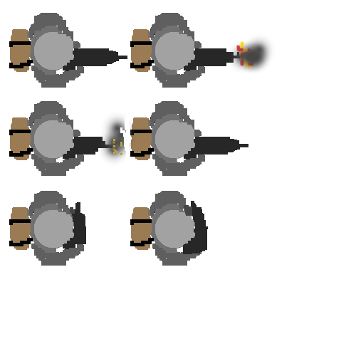
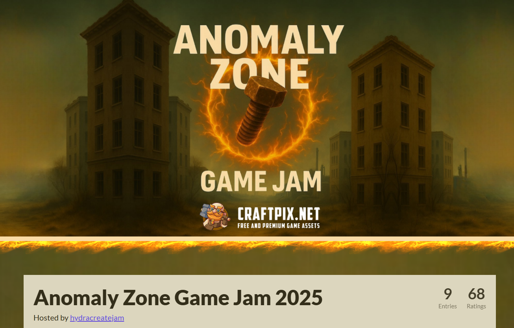
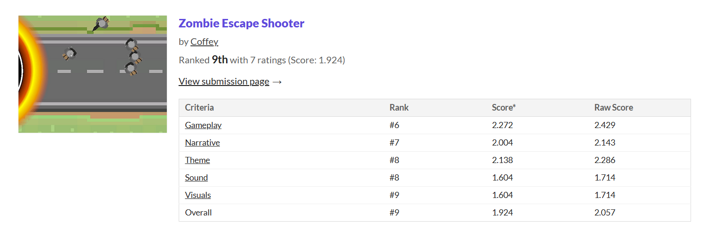

Zombie Escape Shooter

Zombie Escape Shooter is a 2D top‑down zombie survival game created for a 48‑hour game jam. Developed using Unity and C#, I was trying to make a "space-invaders" style game but with zombies and having a 360-degree shooting mechanic. The player just walks along the road trying to outrun the anomaly that spawbns zombies. The player has to shoot the zombies to survive as long as possible, while i havent added some mechanics like ammo pickups or health pickups yet, the game is still in a basic state.
Here is a snapshot of the gameplay. i had designed some basic sprites for the player and walls plus the anomaly using a software called GIMP. and other sprites i used from creators and unity asset store packs. like the road which i head infinitly tiled and moved backto make it look like the player is moving forward.

This small project helped me enforce my knowledge of Sprites using sprite sheets as shown here on the left. This Sprite is the player character idle, shooting and walking animations all in one sprite sheet. I used Unity's built in animator to create the animation states and transitions between them. I also created the zombie enemy using a similar sprite sheet as shown on the right. and a very basic enemy system that follows the player and with their own health and damage. I unfortunatly came last in this Game Jam but I enjoyed it nonetheless and learned a lot about game development in a short amount of time. and I look forward to improving my skills further in the future.

Video and Troubles
this short clip is a demonstration of the testing i did myself and some of the problems i ran into like the zombies not going in right direction, them spawning too much, and movement being incorrect. this is somthing I really enjoy happening, seeing things break unexpectedly and trying to fix them.
in this video you can also see some test sprites i had in early development before i made the final ones. like initially having a "beer" sprite as the bullet. (which I later realised I forgot to change in the final version but no one noticed). also the Zombies were just the player Sprite while i was getting them to work and just swapped them out.
I learned alot form this project, especially in terms of vectors and movement in Unity using C# scripts. and also working under a 48 hour time limit, which was a challenge but also a fun experience.
Mechanics
the bullets in the game were programmed by creating a vector from the player character to the mouse position on click, and then moving that bullet along that vector.
the zombies were programmed to follow the player character by also doing the same with the vector but moving more slowly and updating every frame to be constantly looking at the player by rotating the object towards the player
the road Sprite was made to infinitely tile by having two copies of the road sprite moving downwards and when one goes off screen it resets to the top, creating an infinite scrolling effect.
Colliders handeld player health and damage to each objects, but also limiting the playermovement to within the borders
